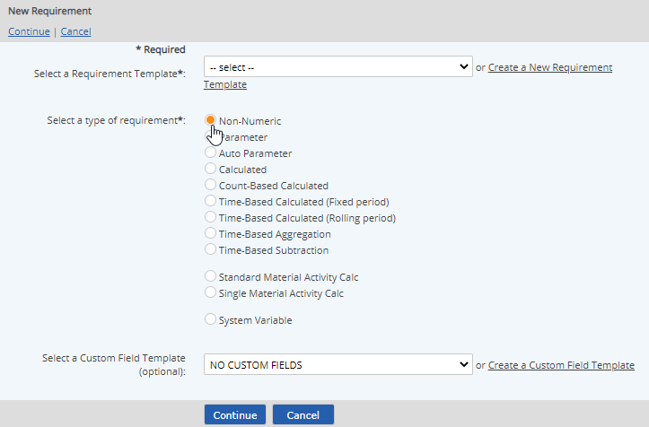

Non-numeric requirements are used to represent the tasks, operating procedures, and equipment standards to which a company is subject—such as periodic inspections, sampling procedures, or a requirement for secondary containment.
To create a non-numeric requirement:
Right click the object in the system model tree and choose New > Requirement.
Choose the Requirement Template from the selection list.
In many cases an appropriate Requirement Template has already been created and you can choose it from the list. If no appropriate Requirement Template exists, you can click the link to Create a New Requirement Template (if you have the appropriate rights). See Requirement Templates.

For the type of requirement to create, select Non-Numeric.
Optionally, you may select a Custom Field Template to apply.
Custom Field Templates are used to apply a group of user-defined custom fields to system model objects. If an appropriate Custom Field Template already exists, you may choose it from the list. The fields will then be available for entry on the properties form next. You may also create a new Custom Field Template if you have the appropriate rights.
If you do not have a Custom Field Template to apply, skip this option. You may also apply a template later. Apply or Change Custom Field Template.
Enter the Non-numeric Requirement Name. This is the name that will appear in the system model tree.
Complete the rest of the applicable fields on the form. See Standard Fields for Requirements.
Periodicity defines how often the requirement is to be implemented or is applicable. For example, if the requirement is for a quarterly report, the periodicity is 4 times a year.
If a Custom Field Template was applied, the fields from the template will be available next. Complete these fields as applicable.
Description: This section should describe what needs to be done for the requirement in order to be in compliance. It may be copied from a permit or set of instructions.
If a task is associated with the requirement, the requirement description field will also be used for the task description by default. For more information and examples of using this field, see Non-numeric Requirement Field Definitions.
Compliance Statement: This describes the method that is used to determine compliance with a requirement.
The Compliance Statement is used in compliance reporting, so it should be written in such a way to satisfy reporting requirements. For more information and examples, see Non-numeric Requirement Field Definitions.
Relations: Documents associated with the Requirement may be linked from the Documents library. See Associating Documents. Related Citations may also be linked. See Citation Associations.
To create a task associated with this requirement, leave the Create task box checked and you will have the opportunity to create the task next.
If no task needs to be associated with this requirement, or you prefer to set up a task later, uncheck the box.
Select Save to save the requirement.
If you chose to create a task, a new task form will appear so you can configure the task and select assignees for the task. The Requirement Description field is used by default for the Task Description.